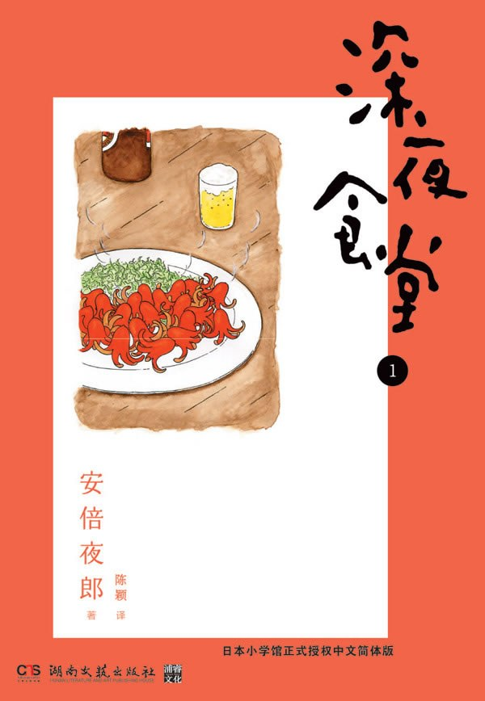

《深夜食堂 01》

总体观点
食物是人类情感创伤与未竟心愿的感官封印；每一道看似寻常的家常饭菜背后，都凝固着都市夜行者无法在日光下启齿的羁绊、遗憾、赎罪与执念。
深夜食堂作为城市原子化生态中的去阶层避难所，消解了白昼强加于个体的身份标签；黑帮头目、脱衣舞娘、落魄歌星与寻常职员在环形吧台前获得平等被接纳的体面与尊严。
治愈的力量不在于宏大的道德说教或山珍海味，而在于沉默克制的包容与恰到好处的倾听；老板脸上的刀疤与少言寡语的守候，构筑了现代都市最稀缺的精神安全岛。
核心观点
-
1. 普鲁斯特味觉效应：家常料理是深层潜意识的情感开关
一道特定的简朴菜肴能够跨越数十年光阴，在舌尖触碰瞬间击穿理性防线，唤醒深埋在童年创伤、故乡记忆或已故亲人身旁的本真体验。
黑道打手因一道土豆沙拉泣不成声，因为粗粝捣碎的土豆泥中封存着患老年痴呆症的母亲年轻时亲手做给自己的唯一温热记忆。 -
2. 白昼阶层标签在深夜环形吧台前的彻底溶解
午夜零点到清晨七点的特殊营业时间，天然筛选出脱离主流白领社会运转轨迹的群体；在这个方寸小店中，社会地位与道德评判暂时退场，唯留生命本质的共振。
带着墨镜、神情冷酷的黑帮骨干龙哥，与经营同性恋酒吧、娇俏多情的小寿寿先生，因各自偏爱红香肠与甜厚蛋烧而成为惺惺相惜的莫逆之交。 -
3. 都市原子化孤独中的“弱连带”温情与边界感
现代人既害怕孤独，又恐惧过于亲密的侵入式人际关系；深夜食堂提供了一种恰到好处的“弱连带”——食客之间互不探听隐私，却能在并肩咀嚼中感受同类的呼吸。
挑食的常客们各点各的菜，偶尔为了荷包蛋上浇酱油还是辣酱油拌几句嘴，这种浅尝辄止的市井烟火气为疲惫的心灵提供了无压力的社交缓冲。 -
4. 生命残缺的无声和解：以隔夜的滋味抚平人生的遗憾
人生的大多数悲剧无法重来，但沉淀后的苦涩却能化作独特的从容；如同经过一整夜微火静置的咖喱，时间赋予了苦难更丰厚醇厚的包容力。
落魄流浪漫画家深爱隔夜冷咖喱加热后的浓稠风味，在酸甜辛辣的复合口感中坦然咽下自己前半生屡屡受挫的惨淡现实。 -
5. 极简烹饪背后的去繁就简生活美学
深夜食堂几乎不使用高档昂贵食材，而是以极度克制的烹饪技法还原食物本味；这种平民主义的料理美学隐喻着卸下繁杂物质欲望、回归生活本真的生命姿态。
一碗最普通的白米饭，趁热铺满薄如蝉翼的柴鱼片并滴入数滴酱油，随着蒸汽让柴鱼如波浪般舞动，这道“猫饭”便足以慰藉贫病交加的年轻歌女。 -
6. 吞咽食物的仪式感赋予明日重启的生命韧性
无论白昼遭遇怎样的屈辱、背叛与失业崩溃，只要在深夜将温热的碳水化合物与肉香切实送入肠胃，肉身的饱足便能迅速转化为对抗明天生活风暴的元气。
在地下擂台被揍得鼻青脸肿的拳击手胜男，拖着伤痕累累的身体一口气吃光大份炸猪排盖浇饭，擦干嘴角后重新燃起对冠军头衔与爱情的斗志。
全书思维导图 · 知识脉络树
全书结构
-
第1夜 红香肠
黑帮干部龙哥偏爱切成章鱼形状的油煎红香肠，与同性恋酒吧老板小寿寿因分享香肠与厚蛋烧结缘，勾勒出硬汉外表下未被岁月磨灭的少年纯真。
龙哥遭袭负伤住院时，小寿寿特意带上便当盒里的红香肠前往探视，展现江湖残酷边缘难得的柔软温情。 -
第2夜 隔夜的咖喱
流浪漫画家每次来店必点冷藏过夜后再加热的咖喱饭，揭示咖喱在长时间静置后香料与肉蔬分子充分融合的原理，映照落魄艺术家需要岁月沉淀的心路历程。
漫画家一边狼吞虎咽隔夜咖喱，一边讲述在出版社退稿与生活窘迫间的挣扎，最终在浓郁酱汁中找回重新动笔的勇气。 -
第3夜 猫饭
默默无闻的演歌女歌手美幸常在清晨光顾，只点热米饭浇酱油撒柴鱼片的“猫饭”；在食堂客人的鼓励下一曲成名红极一时，却因绝症红颜薄命，留下一曲幽咽绝唱。
美幸去世后，一只三色猫悄然来到深夜食堂吧台前吃光了一碗猫饭，客人们仿佛看到了她轻盈归来的灵魂。 -
第4夜 酱油与辣酱油
食客因给荷包蛋淋酱油还是辣酱油（伍斯特辣酱油）产生关东与关西调味分歧，进而牵扯出两位曾是童年好友却走上截然不同人生道路的男子的相逢。
多年未见的儿时玩伴在吧台前因各自习惯的调味汁相认，往昔纯真岁月在煎蛋的焦香中瞬间复苏。 -
第5夜 白萝卜炖牛筋加蛋
风尘女子玛丽莲与单纯的大学生常客在关东煮锅前相识，牛筋的耐嚼与白萝卜吸收高汤后的透明软烂，见证了一段冲破世俗偏见与试探的情感羁绊。
年轻学生不顾世俗眼光为玛丽莲剥开卤蛋，两人在腾腾热气中达成了超越肉体交易的精神互信。 -
第6夜 纳豆
一位坚持吃纳豆必须用筷子顺时针高速搅拌上百次以拉出稠密白丝的音乐制作人，在对极简发酵黄豆的严苛强迫症背后，展露出对艺术节奏近乎偏执的坚守。
音乐人把纳豆搅拌拉丝的声音比作打击乐律动，在黏稠的口感中完成了一首新歌的编曲灵感构想。 -
第7夜 烤海苔
脾气暴躁、嘴巴毒辣的老头每晚来店只点烤海苔配清酒，表面上对周遭一切冷嘲热讽，实际上在深夜独自借海苔的脆咸掩饰对早逝妻子与叛逆女儿的深切牵挂。
老头将烤得焦脆的海苔整齐码在小碟中细嚼慢咽，老板默默为他添上一杯温酒，两人心照不宣地守护着这份倔强的悲伤。 -
第8夜 鳕鱼子
脱衣舞剧场头牌玛丽莲最爱半生不熟的微烤鳕鱼子配白饭，外层微焦、内里爆浆的口感，正像她游走于风月场却依然葆有天真烂漫少女心的真实写照。
面对台下客人的轻薄调笑，玛丽莲在深夜食堂大口咀嚼烤鳕鱼子，用饱满的碳水与油脂洗净一身的风尘疲惫。 -
第9夜 猪排盖浇饭
落魄拳击手胜男每次获胜后必带带着孩子的单亲妈妈光顾，点一份热气腾腾、蛋液半凝固的炸猪排盖浇饭；猪排金黄酥脆与洋葱甘甜，交织出底层底层奋斗者的血泪尊严。
胜男在关键赛役被对手KO击倒，但在母子二人特意送来的猪排盖浇饭香气激励下，终于咬牙翻盘赢下金腰带。 -
第10夜 那不勒斯意大利面
年过半百的资深AV男优“电击大木”每晚点铁板盛装、打入生鸡蛋并浇上大量番茄酱的那不勒斯意面，在酸甜油润的滋味中追忆早年离家闯荡时母亲亲手烹制的最后晚餐。
大木先生一边吃着满嘴通红的番茄酱意面，一边传授后辈年轻演员“无论从事何种行当，做人都要对得起良心”的朴素哲理。 -
第11夜 土豆沙拉
冷酷的黑社会讨债人偏偏对简单捣碎的土豆沙拉情有独钟；随着案情展开，揭示其老母在福利院已认不出儿子，却依然在下意识里不停给病友分发自制土豆泥的痛心往事。
打手坐在吧台角落，将带有一点黄瓜片与胡萝卜丁的土豆泥大口塞入口中，背对众人默默擦去眼角滚落的泪水。 -
第12夜 米糠酱腌黄瓜
两位从年轻时起就互相较劲的老太太，在吧台前为哪一家的米糠酱床腌出的黄瓜更脆嫩可口争执不休，在乳酸菌漫长的自然发酵中，沉淀出相伴一生的市井邻里情。
当其中一位老太太病倒住院时，另一位嘴硬的老人悄悄托老板把自家腌渍的黄瓜条送进病房，完成了无声的探望。 -
第13夜 西瓜
酷热三伏天，客人们分食老板切开的冰凉西瓜并在红果肉上撒上少许精盐；在咸味催化出的极致清甜中，见证了一段夏夜露水姻缘的开始与悄然终结。
一对因西瓜结识的年轻男女在夏末平静分手，相约来年盛夏如果依然单身便在深夜食堂重聚切瓜。 -
第14夜 拉面
一位身着笔挺西装但神情疲惫的神秘常客，每逢午夜必点食堂菜单上没有的“袋装速食泡面加荷包蛋”，在极其廉价的方便面汤蒸汽中，唤醒了幼年贫寒却被双亲宠爱的最纯粹安全感。
大企业高管撕开泡面调料包，看着半熟蛋黄在面汤中缓缓化开，卸下了全天维持精英人设的重压与伪装。 -
清口菜 炸猪排咖喱饭
作为第一卷的特别收尾篇，老板亲自图解制作外皮金黄酥脆的炸猪排与慢火熬制洋葱牛肉咖喱的融合秘诀，给全书形形色色的市井夜行画上圆满而温暖的休止符。
老板在漫画卷末以轻松幽默的语调分享独门烹饪小贴士，鼓励每一位在都市深夜奔波的读者“填饱肚子，明天继续加油”。